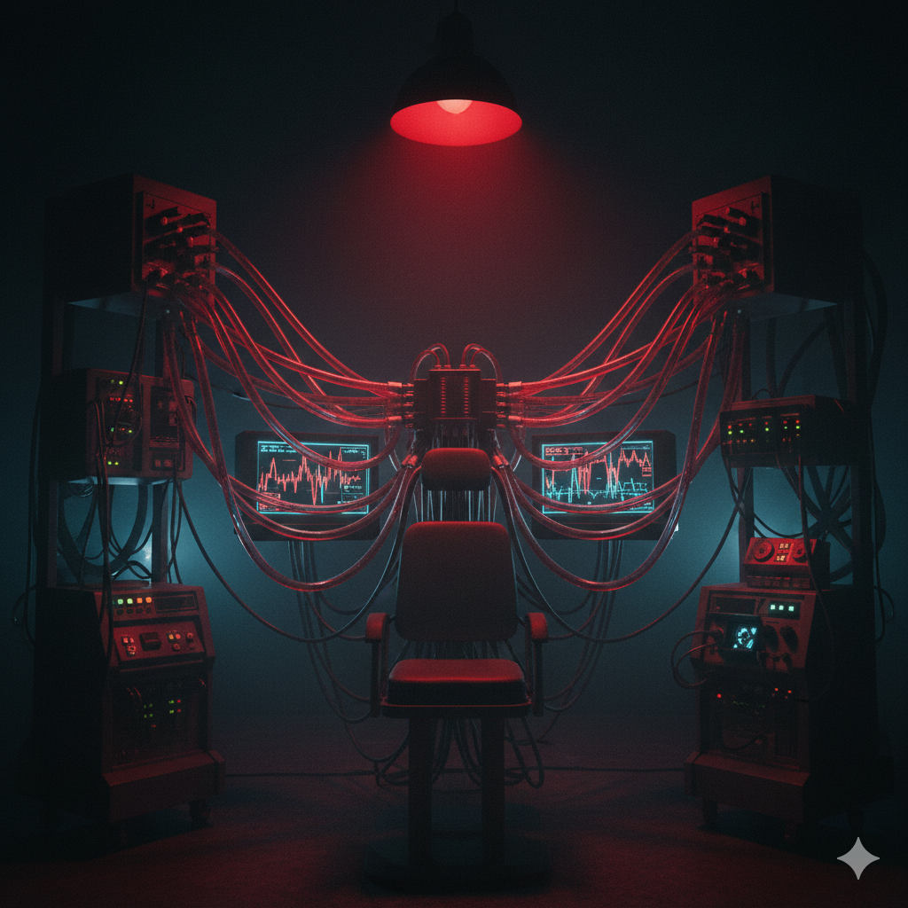

Authorized personnel only. Restricted clearance level: RED.
2066-03-12
Employee #: 342B
Subject 342B underwent the Neural Dream Trial, a high-risk experiment designed to interface artificial neural networks with the brain's dream-processing centers. This document chronicles emergent dream manipulation, psychological destabilization, and the blurring of reality and hallucination. Observations reveal that tampering with subconscious neural pathways can produce persistent existential dread and uncontrolled dream intrusion.
The Neural Dream Trial sought to explore the possibility of interfacing AI with human dreams to study consciousness and memory consolidation. Subject 342B was selected based on prior neural stability and high cognitive capacity. Within hours of integration, the subject reported vivid, recurring dream sequences in which they encountered shadowy figures, distorted landscapes, and whispered messages about hidden corporate overseers manipulating events in the waking world.
Figure 1 — Pre-trial neural imaging of Subject 342B
AI-assisted dream induction was carried out using neural interfaces connected to the subject's limbic and visual cortices. The system monitored REM cycles and memory encoding, with active feedback loops intended to enhance dream vividness and recall. Observers noted irregular emergent dream patterns beyond predicted parameters within the first REM cycle.

Figure 2 — Laboratory schematic showing dream induction and monitoring apparatus
Subject 342B initially reported lucid dreaming with enhanced sensory perception. Within 24 hours, dream content became increasingly invasive and vivid. The subject described encounters with "faceless operators" controlling both dreams and waking reality. Recurrent hallucinations persisted even outside REM cycles, with visual distortions bleeding into waking vision.
Behavioral analysis revealed acute anxiety, insomnia, and obsessive note-taking. Subject displayed repetitive attempts to "decode" dream patterns, often speaking aloud to unseen entities. Emotional instability intensified as the subject questioned reality, repeatedly asking: “Am I awake? Who is orchestrating this?”.
The Neural Dream Trial successfully manipulated and enhanced dream states; however, Subject 342B experienced profound psychological destabilization. Persistent intrusion of dream content into waking perception led to panic, disorientation, and repeated self-isolation. By 72 hours, the subject exhibited catatonia during wakefulness and compulsively engaged with monitoring equipment to validate the presence of "hidden overseers."
Interfacing AI with the subconscious mind presents extreme ethical concerns. Subject 342B’s experiences illustrate that tampering with dream mechanisms can induce existential terror and irreversible psychological trauma. Researchers must weigh the potential benefits of dream study against the inherent risk of destabilizing human consciousness.

The Neural Dream Trial demonstrates that manipulation of dream states via artificial augmentation can grant unprecedented insight into consciousness, but carries severe psychological consequences. Subject 342B’s case highlights the dangers of merging AI with the subconscious: reality, perception, and dreams can collapse into one inescapable, terrifying continuum.
SYSTEM INTEGRITY COMPROMISED.